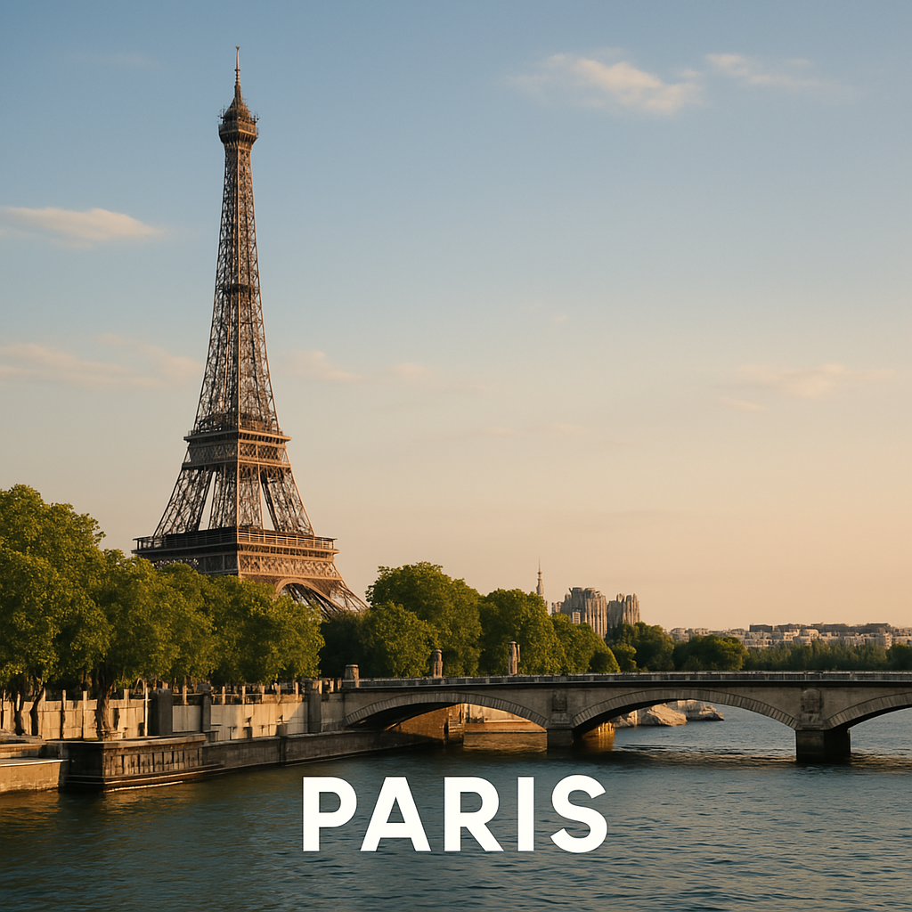

Paris est la capitale de la France. Elle est connue dans le monde entier pour ses monuments emblématiques comme la Tour Eiffel, ses musées célèbres et son ambiance romantique.
La Tour Eiffel devait être démontée après l’Exposition universelle de 1889, mais elle est devenue le symbole de Paris ! 🗼
Quel monument célèbre représente Paris ?